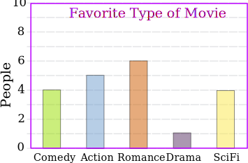
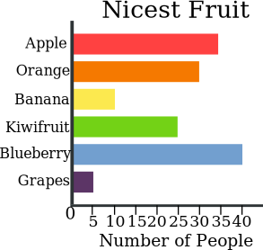
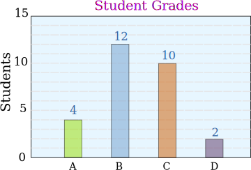

Bar Graphs
A Bar Graph (also called Bar Chart) is a graphical display of data using bars of different heights.
Imagine you just did a survey of your friends to find which kind of movie they liked best:
| Table: Favorite Type of Movie | ||||
| Comedy | Action | Romance | Drama | SciFi |
|---|---|---|---|---|
| 4 | 5 | 6 | 1 | 4 |
We can show that on a bar graph like this:

It is a really good way to show relative sizes: we can see which types of movie are most liked, and which are least liked, at a glance.
We can use bar graphs to show the relative sizes of many things, such as what type of car people have, how many customers a shop has on different days and so on.
Example: Nicest Fruit
A survey of 145 people asked them "Which is the nicest fruit?":
| Fruit: | Apple | Orange | Banana | Kiwifruit | Blueberry | Grapes |
| People: | 35 | 30 | 10 | 25 | 40 | 5 |
And here is the bar graph:

That group of people think Blueberries are the nicest.
Bar Graphs can also be Horizontal, like this:

Example: Student Grades
In a recent test, this many students got these grades:
| Grade: | A | B | C | D |
| Students: | 4 | 12 | 10 | 2 |
And here is the bar graph:

You can create graphs like that using our Data Graphs (Bar, Line, Dot, Pie, Histogram) page.
Histograms vs Bar Graphs

Bar Graphs are good when your data is in categories (such as "Comedy", "Drama", etc).
But when you have continuous data (such as a person's height) then use a Histogram.
It is best to leave gaps between the bars of a Bar Graph, so it doesn't look like a Histogram.